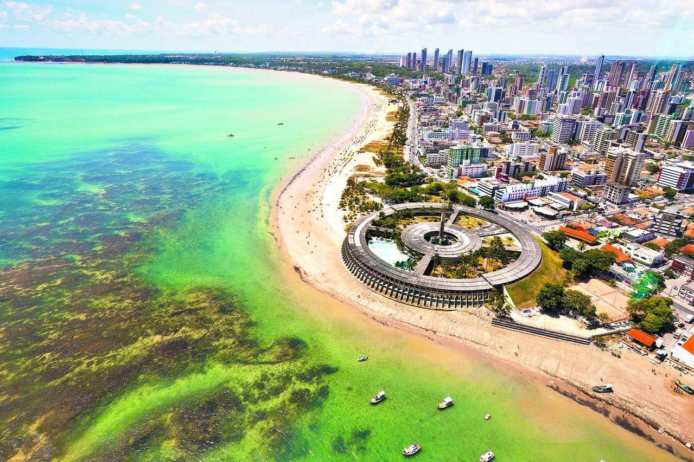
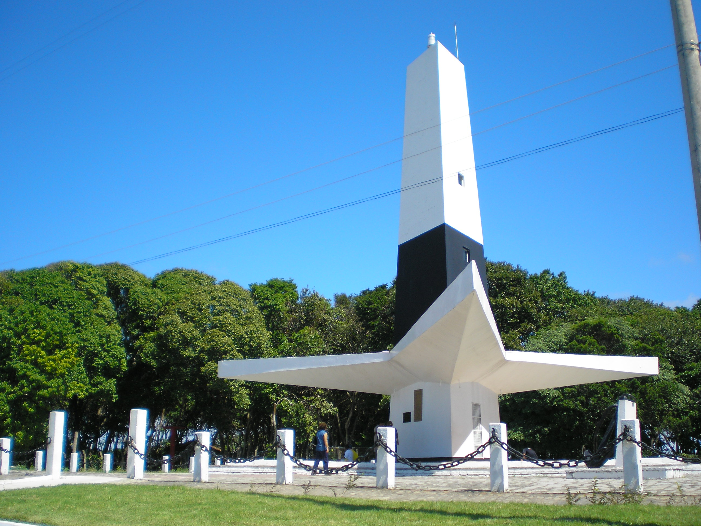
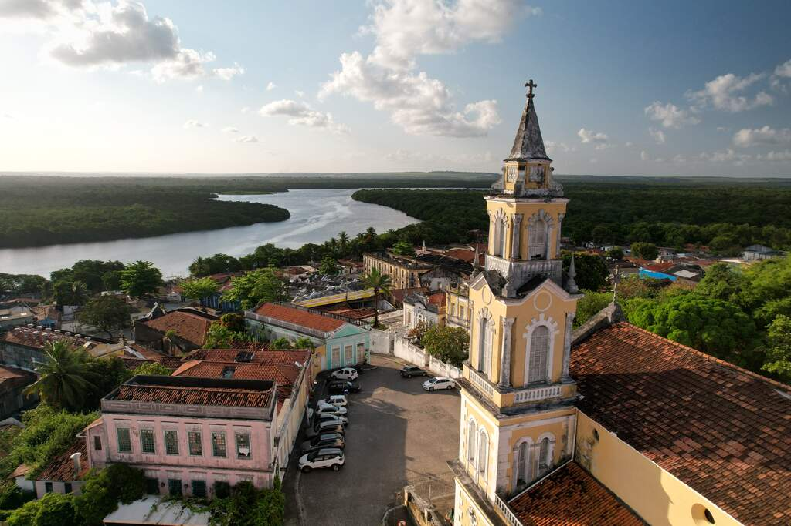

Praia de Tambaú
A praia urbana mais famosa da cidade, com calçadão, feirinha e bares à beira-mar.
Descubra João Pessoa, a terceira cidade mais antiga do Brasil, entre o verde e o mar.
Alguns pontos de interesse:

A praia urbana mais famosa da cidade, com calçadão, feirinha e bares à beira-mar.

O ponto mais oriental das Américas, onde o sol nasce primeiro no continente.

Casarões coloniais, igrejas seculares e o Centro Cultural São Francisco.